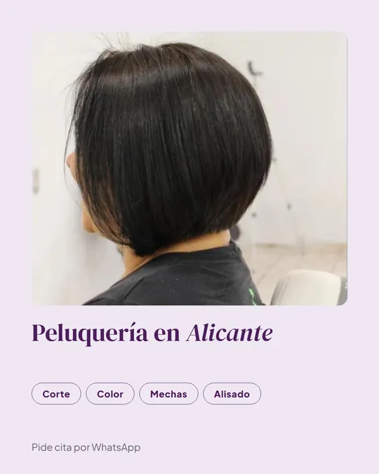
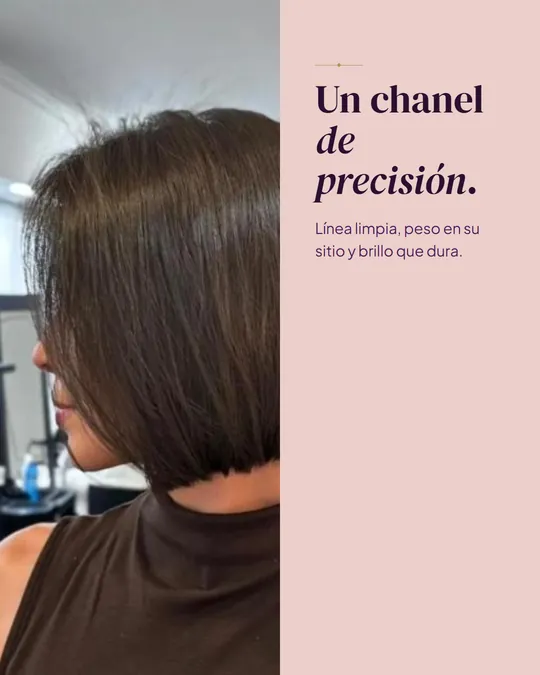
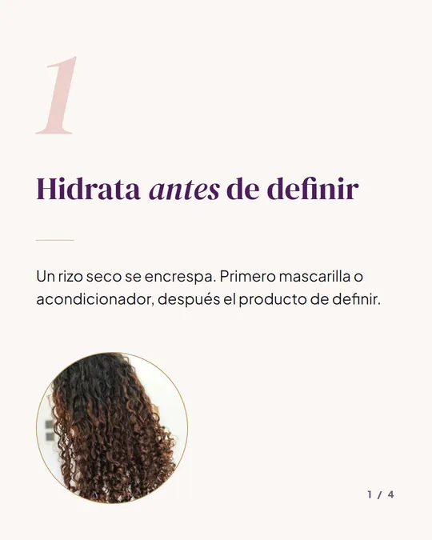
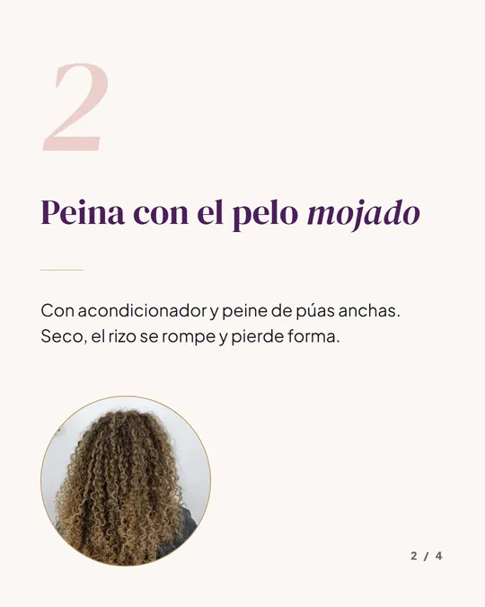
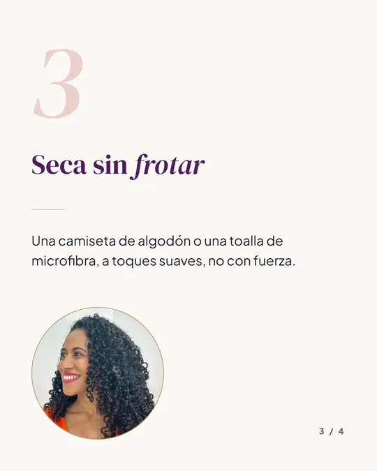

Juliana Oliveira · Peluquera en Alicante
Bastidores
Aqui fica tudo o que já está pronto, num lugar só. As páginas estão fora do Google (noindex). Atualizado em 24/11/2026.
Grade 3×4 do Instagram (proposta)
São os posts que já estão prontos, mostrados a 90% da largura. A primeira linha tem os 3 fixados. Os posts do curso ficaram fora desta página pública.
- Fijado: presentación

Fijado: servicios- Fijado: pedir cita






